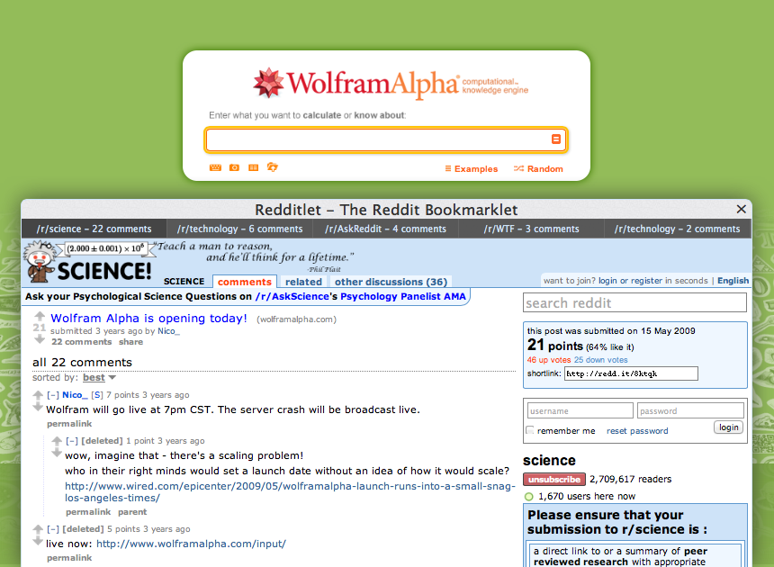

Redditlet
← Drag that to your bookmarks bar!
The Reddit Bookmarklet

How to use it:
Step 1: Make sure your browser's bookmarks bar is showing.
Step 2: Scroll up and drag the 'Redditlet' button to your bookmarks bar.
Step 3: Click your new 'Redditlet' bookmark while browsing any site on the web.
That's it!
Redditlet will automagically pull up the top 5 reddit posts about that site.
If the link has never been posted, Redditlet will allow you to submit it.